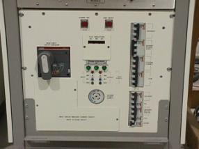
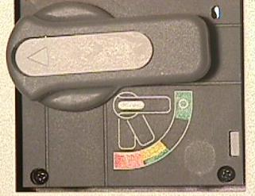
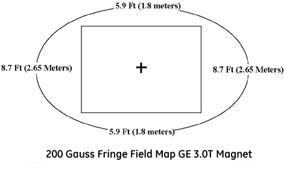
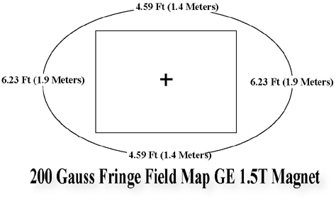

Operating Documentation
Direction 5440001-3, Rev# 6
Module Version 1.0, Version Date 5/15/07
Operating Documentation |
Table 1 shows a breakdown of kit parts for the bridge support section of this upgrade.
Refer to Illustration 1, Illustration 2 and Illustration 3 for a visual representation of the parts and finished upgrade views.
The following lock out tag out procedures should apply in most cases. However, if you have a system type not covered in this section, proceed to the safety section of the appropriate service documentation and follow the Lock Out Tag Out procedures.
| ||||
| Possible personal injury! | ||||
| Avoid serious injury or death by electrocution. | ||||
| Remove power from the ACGD hardware before working on the module. Lock and tag out power to the ACGD hardware system wall box disconnect before starting work. |
Bring the PC software down.
Remove the cover from the front of the ACGD cabinet. See Step .
Illustration 4: Breaker Location

Rotate the main breaker on the ACGD/PDU (labeled INPUT) counterclockwise to the green, O (OFF) position. See Step .
Illustration 5: Main Input Breaker in the Off Position

Verify that the 3 phase indicator lamps on the front of the Power Distribution Unit (PDU) as shown in Illustration 7 are not illuminated.
Lock Out / Tag Out the PDU INPUT circuit breaker.
Verify that all energy has been dissipated. Measure the power at the reduced voltage front panel test points of the PDUs (420 and 208). See Illustration 7. Voltages must be at 0Vac before continuing.
The magnetic field strength used in MRI is several thousand times that of Earth's magnetic field! This field is three-dimensional; therefore, magnetic field precautions must be applied to areas on floors above and below the Magnet, as well as to the surrounding space on the same level. Take the following precautions to prevent danger to persons and equipment:
Post WARNING signs outside the 5 gauss zone, alerting personnel with cardiac pacemakers, neurostimulators, and other biostimulation devices of the effect of the magnetic field on these devices.
Post WARNING signs at the termination point of the Magnet Cryogenic Vent, alerting personnel to the sudden discharge of freezing gases and small objects.
Post SECURITY signs on both sides of all doors leading into the Magnet Room, alerting personnel of high magnetic field and not to bring ferro-magnetic objects in the Magnet Room. Security signs will also indicate magnet field strength.
Do not bring ferro-magnetic objects (e.g., tools, pens, tape measures, steel-toe shoes, vacuum pumps, etc.) into the Magnet Room. Large metal objects must not be brought near the outside walls of the Magnet Room. To find out about specific equipment proximity limits refer to the specific Pre-Installation manual published for the system.
Many non-ferrous tools may exhibit some attractive force into the Magnet. When a tool is not in use, it should be placed outside the Magnet's 5 gauss zone. Placing tools closer may allow them to be pulled into the magnet, causing personal injury and/or equipment damage.
During some service operations, ferrous tools and/or parts may have to be carried into or out of the Magnet Room. Examples include: gradient cable crimpers, table dock, longitude drive motor, blower box, coldhead, etc. Extreme care must be taken to prevent these ferrous parts from being pulled into the Magnet. Two field personnel should be on site any time a ferrous tool or part must be moved into or out of the Magnet Room. The part replacement procedure should be consulted prior to removing or replacing ferrous components. The correct tools should be used in full working condition prior to attempting ferrous parts replacement.
When moving a ferrous item (such as: gradient cable crimpers, gradient cable cutters, patient blower box, gradient blower box or longitude drive motor) to the back of the magnet, follow a path that will keep you out of the 200 gauss line of the magnet. Keep the ferrous part as close to the screen room wall and floor as possible. Step shows the 200 gauss region around a 3T/94 magnet and Step gives details of the GE 1.5T magnet 200 gauss line.
Analog watches (those with hands) and magnetic-coded credit cards can be destroyed if taken near the Magnet.
Magnetic tapes can be erased, recording heads magnetized, and camera shutters ruined by strong magnetic fields.
Use only non-magnetic gas cylinders and Dewars when transferring cryogens into an energized Magnet. All gas cylinders must be secured to a cart or wall to prevent falling whenever the protective cap is removed.
Illustration 8: 3.0T/94 200 Gauss Plot

Illustration 9: GE 1.5T 200 Gauss Plot

Gradient Isolation Kit must be installed prior to installing this bridge kit. To check if the Isolation Kit has been installed, remove the front enclosure end bell. Refer to service CD ROM 2160623, Magnet Enclosure, and then go to the Wide Open Enclosure section for directions on removing the enclosure. Bridge may remain in the magnet bore to obtain general bridge support post position.
Refer to Illustration 10. Check to make sure the gradient isolation kit is installed. The Gradient Isolation Kit must be installed with the two (2) Upper Radial supports, located at approximately 2 and 10 o'clock positions. Note, the two (2) Upper Radial supports are installed on both the front and rear end of the gradient coil (4 per coil). If radial supports are installed, refer to 2319693 for proper parts and application. Check the tightness of each of the supports. If the parts are able to move by hand, follow the installation instructions making sure to secure the M16 screws using the proper M16 locking nut.
If necessary, Gradient isolation kits can be ordered for either the Cx or the Cx/K4 magnet.
The phenolic bridge support will attach to the magnet interface ring. The part will mount above the gradient coil aluminum extension plate. The bridge support, when properly fitted, will not contact the magnet except at the two bolt hole locations on the magnet interface ring identified in Illustration 11. Locate the phenolic bridge support. The bridge support fastens to the magnet interface ring with the shown surface in Illustration 12 facing away from the magnet iso-center.
Locate 2 - M10 x 30mm Hex Head screws.
Apply a very small drop/dab of anti-seize to the M10 x 30mm screws.
Position the bridge support to align the two through holes in the phenolic support to the magnet interface ring bolt holes identified in Illustration 12.
Insert a single M10 x 30mm screw into either the left or right phenolic through hole and hand tighten.
Insert the second M10 x 30mm screw into the other phenolic through hole and hand tighten.
Tighten the M10 x 30mm bolts to 10 ft-pounds.
Feed RF Bias cable to the side of the gradient mounting bracket as illustrated in Illustration 13.
Set the initial height, h, to 87 mm from the phenolic interface on the (mustache) Bridge Support to the top of the Support Cap, but not including the Support Cap Cup. Refer to the details defined in Illustration 24, when setting the dimension h. It is critical to follow Illustration 24 setups to prevent the need to remove the end bell multiple times. Refer to Illustration 14. Use h as a starting point.
The 110mm long all thread studs will screw into the Bridge Support to the approximate height defined after the end bells are secured to the magnet enclosure assembly. Jam two M10 nuts to the bridge support to prevent loosening. The final height includes the Support Cap Cup.
Final adjustment to the final vertical position will be achieved later in Final Adjustments by changing the vertical position of the phenolic bearing cap support.
The production bridge has a positioning pin located near the patient table belt assembly. The pin is captured in the aluminum tube. The removal of this pin is optional. If you are not able to remove the pin, leave in place but check to make sure the pin does not contact the front-end bell. See Illustration 15.
The phenolic cap support will support the weight of the patient. This cap support will insert into the bridge support cap cup that attaches to the bottom of the bridge.
End Bell Modifications and Preparations. Refer to Illustration 17 and Illustration 18.
Measure the distance between the centerline of the left vertical support to the centerline of the right vertical support. See Illustration 19 to verify 233mm.
Refer to Illustration 22 and close off air leaks by doing the following:
Clean adhesive from yellow memory foam at 2 locations front and rear end bells.
Apply 50mm long pieces of Cloth Duct Tape to cover holes.
Clean up area where positioning block was removed to eliminate remaining epoxy using citric cleaner.
Apply a piece of Cloth Duct Tape over area to seal surface.
Modify the rear end bell gussets as shown in Illustration 23.
| NOTE: | Two bridge support rods with jam nuts are threaded into the bridge support after the front end bell is installed. |
Position the end bell using the standard enclosure assembly procedure found on service CD 2160623 Magnet Enclosures then Wide Open Enclosures.
Fasten the end bell to magnet following the enclosure assembly process.
| NOTE: | Bridge is leveled using the phenolic threaded caps on the front end and through adjustment of the rear pedestal on the rear of the bridge. |
Re-assemble and install the two bridge support rod assemblies into Support (mustache) Bracket. See Illustration 24.
Stretch O-ring over Support Cap and position into groove in phenolic.
Slide the Phenolic Support Cap Cup onto phenolic Support Cap support member.
Lower bridge into position connecting the cradle drive mechanism. See Illustration 25.
Align front of bridge to end bell. See Illustration 26.
Adjust the front bridge to its final position. See Illustration 27.
Adjust the rear pedestal and the front threaded caps to set the final bridge leveling position. See Illustration 28.
Apply adhesive to the bridge support caps:
After bridge is level, tighten jam nuts to prevent the Bridge Support Caps from changing position due to vibration. The top jam nuts (both left and right support) should be accessible with the enclosure in place.